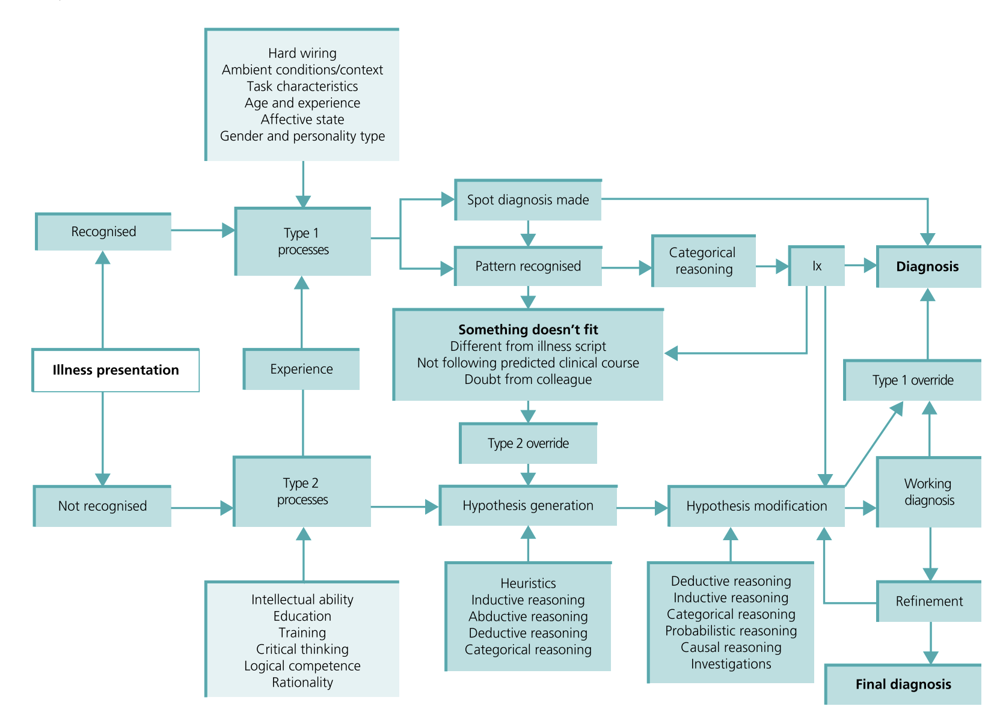

Raciocínio clínico: os dois sistemas de pensamento, armadilhas da mente e como evitá-las
Como seu cérebro realmente pensa: a teoria do duplo processo
Imagine que você está dirigindo para o trabalho pela mesma rota de sempre. Você freia no sinal, vira à direita na padaria, estaciona — tudo sem pensar conscientemente em cada movimento. Seu cérebro está no piloto automático. Agora imagine que, no meio do caminho, há um desvio inesperado por causa de uma obra. De repente, você precisa parar, pensar, consultar o GPS, escolher uma rota alternativa. Você saiu do piloto automático e ativou o modo “resolução de problemas”.
Esses dois modos de operar — rápido/automático versus devagar/deliberado — são exatamente o que acontece no raciocínio clínico. Conhecemos como Tipo 1 e Tipo 2.
Tipo 1: o piloto automático (rápido e intuitivo)
Ele atua pelo reconhecimento instantâneo de padrões, heurísticas (“atalhos mentais”), baixíssimo esforço consciente. Sempre atua em problemas que nos são familiares em contextos familiares.
Você reconhece o rosto de um amigo numa multidão em milissegundos, sem precisar “analisar” nariz, olhos, boca separadamente.
No contexto clínico: ao ver lesões vesiculares em trajeto de dermátomo unilateral, seu cérebro grita “herpes-zóster!” antes mesmo de você terminar de examinar
Tipo 2: o GPS recalculando (lento e analítico)
Precisa do nosso esforço para um raciocínio deliberado, geração e teste consciente de hipóteses, uso explícito de probabilidades, diretrizes e cálculos. É o que usamos em quadros atípicos, situações incertas ou cenários inesperados e de alto risco.
Quando você está comprando um carro usado e precisa avaliar preço, quilometragem, histórico de manutenção, comparar modelos, calcular financiamento — puro Tipo 2
No contexto clínico: paciente com febre + dor abdominal + confusão mental + história psiquiátrica prévia. Nada “grita” um diagnóstico óbvio. Você precisa sentar, listar diferenciais (apendicite? infecção urinária? meningite? crise tireotóxica?), pedir exames estratégicos, reavaliar conforme resultados chegam
Como alternamos entre eles?

A Figura 4 (modelo universal modificado de raciocínio diagnóstico) pode ser lida assim:
- Apresentação da doença → se o problema é reconhecido, o clínico segue por processos tipo 1: spot diagnosis ou padrões conhecidos, podendo aplicar regras categóricas e pedir exames simples para confirmar o que já é provável.
- Algo não encaixa (“something doesn’t fit”) → trajetória clínica diferente do esperado, dúvida do colega, ou achado que contradiz o “script” da doença. Isso deve acionar um Type 2 override: pausa consciente, geração de hipóteses alternativas, reinterpretação de dados, eventual mudança de rumo.
- Problema não reconhecido → inicia-se em tipo 2 (gerar lista de diferenciais, planejar investigação). A modificação de hipóteses é contínua à medida que novas informações chegam.
- Diagnóstico de trabalho → refinamento → diagnóstico final. Em qualquer ponto, um Type 1 override também pode ocorrer (ex.: diante de evidência nova muito clara que permite agir rapidamente).
Regra prática: se o curso não segue o script, pause e mude para tipo 2. Se ficar claro e típico, volte ao tipo 1 para ganhar eficiência.
Em resumo
- Tipo 1 (rápido/intuitivo): reconhecimento de padrões, heurísticas, baixo esforço. Útil quando o problema é familiar e o contexto é estável (ex.: “herpes-zoster” ao ver lesões típicas).
- Tipo 2 (lento/analítico): raciocínio deliberado, geração e teste de hipóteses, uso explícito de probabilidades, diretrizes e evidências. Útil quando o quadro é atípico, incerto ou de alto risco.
Exemplo: paciente sonolento, “frequentador” com alcoolismo. Tipo 1 sugere “intoxicação alcoólica”. Mas sinais atípicos (febre, rigidez de nuca, déficit focal, trauma recente) devem forçar Type 2 override para considerar pneumonia, hematoma subdural, sepse, etc., ajustando probabilidades, escolhendo exames e reavaliando após resultados.
Quando o cérebro nos sabota: erros no diagnóstico
Nem todo erro é “culpa” do médico. Vamos organizar:
1. Erros sem culpa (no-fault)
Informação simplesmente não estava disponível, ou a apresentação foi extremamente bizarra (o livro-texto não prepara para tudo).
2. Erros sistêmicos
Plantão com 1 médico para 40 pacientes, falta de supervisão, prontuário eletrônico travando, laboratório que demora 6 horas, comunicação falha entre turnos. O sistema estava contra você.
3. Lacunas de conhecimento
Você não gerou a hipótese porque genuinamente não conhecia aquela doença ou manifestação atípica. Solução: estudar, buscar feedback, discutir casos.
4. Mau uso de testes diagnósticos
Esquecer que exames mudam probabilidades (não são respostas “sim/não” mágicas). Ignorar probabilidade pré-teste, sensibilidade, especificidade, razão de verossimilhança.
Exemplo: pedir D-dímero em paciente de baixo risco para TEP — resultado positivo não significa nada (especificidade baixa). Você criou confusão, não clareza.
5. Erros cognitivos: os viéses sorrateiros
São armadilhas no próprio processo de pensar. Silenciosos, automáticos, perigosos. Vamos aos principais.
Os vilões invisíveis: viéses cognitivos na prática
Ancoragem
Você se fixa na primeira informação/hipótese e não consegue mais soltar.
Exemplo não-médico: Você vê um carro anunciado por R$ 80.000. Depois vê outro similar por R$ 65.000 e acha “barato”, mesmo que o preço justo seja R$ 55.000. A primeira âncora distorceu sua percepção.
Exemplo clínico devastador: Paciente de 45 anos, hipertenso, chega com dor epigástrica. A triagem anotou “gastrite”. Você lê isso, conversa com o paciente (que tem história de refluxo), examina (dor à palpação de epigástrio) e prescreve omeprazol. Você ancorou em “gastrite”.
Mas o paciente volta 4 horas depois em parada cardíaca. Era infarto inferior (que pode doer no epigástrio). A âncora matou — literalmente.
Viés de confirmação
Você valoriza apenas evidências que confirmam sua hipótese inicial e ignora (inconscientemente!) as que a contradizem.
Exemplo clínico: Você acha que é refluxo. O paciente diz que piora depois de comer (confirma!). Mas ele também menciona que a dor irradia para o braço esquerdo e que veio suando frio — você não registra isso, porque seu cérebro está filtrando informações. A troponina vem “limítrofe” (0,06) e você pensa “deve ser inespecífico”. Viés de confirmação em ação.
Fechamento prematuro
Encerrar o raciocínio antes de reunir/verificar dados suficientes. Primo próximo do “satisficing”.
Exemplo clínico: Criança com febre, coriza, sem foco aparente. “Virose, pode ir para casa.” Você nem olhou a saturação de oxigênio (88%) nem o hemograma (20.000 leucócitos com desvio). Era pneumonia evoluindo para sepse.
Satisficing de busca
Parar ao encontrar a primeira resposta “razoável”, sem procurar por uma segunda patologia/problema.
Exemplo radiológico clássico: Paciente caiu de altura. Raio-X mostra fratura de úmero. Você para de olhar. Perdeu a segunda fratura (rádio distal) e o pneumotórax no ápice.
Exemplo toxicológico: Paciente confuso, acham caixa de diazepam vazia. “Intoxicação por benzodiazepínico.” Mas ele também tomou paracetamol (caixa no lixo) — você perdeu a intoxicação dupla. O diazepam vai passar, o paracetamol vai destruir o fígado.
Erro de probabilidade posterior
Você “cola” no diagnóstico habitual do paciente e ignora que hoje pode ser diferente.
Exemplo clínico: Paciente alcoolista crônico chega agitado pela 15ª vez no mês. “Abstinência alcoólica de novo.” Você seda, interna, vai embora. Mas desta vez ele tinha febre e rigidez de nuca. Era meningite bacteriana, não abstinência. O histórico virou armadilha.
Viés de resultado (outcome bias)
O desejo por um certo desfecho (curar, dar alta, evitar internar) distorce o julgamento.
Exemplo clínico: Paciente pós-operatório de cirurgia abdominal, 3º dia, evoluindo com febre e taquicardia. Você quer que seja só uma pneumonia (antibiótico resolve, paciente vai bem). Você meio que ignora a distensão abdominal e a leucocitose progressiva. Era deiscência de anastomose com peritonite. O desejo pelo desfecho fácil atrasou o diagnóstico correto.
Como se proteger: táticas práticas de “de-biasing”
1. Timeout diagnóstico (30–60 segundos de pausa consciente)
Antes de fechar o raciocínio, pergunte a si mesmo:
“O que não consigo explicar neste caso?”
“O que não encaixa com minha hipótese principal?”
2. Regra do 3×
Antes de encerrar, force-se a nomear:
Pelo menos 3 diagnósticos alternativos plausíveis
1 “pior caso” que eu preciso excluir agora (mesmo que improvável)
Exemplo prático:
Principal: Cistite
Alternativos: Pielonefrite, DST, vaginite
Pior caso a excluir: Gravidez ectópica rota (se há dor abdominal baixa + teste de gravidez não foi feito)
3. Checklists e cognitive forcing (regras que forçam o Tipo 2)
Memorize e aplique:
Dor torácica? → Sempre considerar IAM, TEP, dissecção de aorta, pneumotórax (mesmo que pareça “só” gastrite)
Trauma + fratura? → Procurar segunda fratura antes de dar alta
Intoxicação confirmada? → Procurar segundo agente (politoxicidade é comum)
Paciente pós-alta retorna? → Reavaliar do zero, não assumir que é a mesma coisa
4. Probabilidades explícitas: faça as contas
Declare mentalmente (ou no papel):
Probabilidade pré-teste (antes do exame): “acho que a chance de TEP é 30%”
Use LR+/LR- do exame para calcular probabilidade pós-teste
Veja se a nova probabilidade cruza os limiares de ação: descartar (<5%), tratar (>80%), ou investigar mais (entre 5-80%)
Exemplo:
Suspeita de TEP = 15% (Wells baixo)
D-dímero negativo (LR- = 0,1)
Probabilidade pós-teste = 15% × 0,1 = 1,5% → pode descartar com segurança
5. Segundo olhar: discuta com um colega
Especialmente em:
Casos atípicos
Alto risco (criança grave, idoso instável)
Quando você tem dúvida mas “não sabe bem por quê”
Um olhar novo, sem as mesmas âncoras que você, pode ver o que você não viu.
6. Registre o raciocínio no prontuário (especialmente na Avaliação do SOAP)
Escrever por que o diagnóstico A é mais provável que B força clareza mental, facilita auditoria de erros futuros, e permite aprendizado.
Exemplo:
“Avaliação: Pneumonia comunitária (febre + tosse produtiva + consolidação à ausculta + infiltrado em RX). Diferenciais considerados: TEP (menos provável pela ausculta e ausência de taquipneia desproporcional), IC descompensada (sem edema/estase jugular), tuberculose (sem perda ponderal/sudorese). Pior caso a monitorar: sepse/SDRA.”
7. Acompanhe desfechos: feche o ciclo de feedback
Volte nos casos para saber o que realmente aconteceu. Isso recalibra sua “intuição” (seu Tipo 1) ao longo do tempo. Você aprende quais padrões funcionam e quais te enganaram.
Juntando tudo: como isso se integra à consulta real
Tipo 1 bem calibrado = agilidade (você não perde tempo em casos óbvios)
Tipo 2 oportuno = segurança (você não erra por excesso de confiança)
Na prática do SOAP:
S (Subjetivo): capture sinais de “algo não encaixa” — inconsistências, sintomas atípicos
O (Objetivo): meça de forma reprodutível (sinais vitais, exame físico sistemático)
A (Avaliação): explicite hipóteses e incertezas, mostre seu raciocínio
P (Plano): crie planos graduados por risco, com seguimento claro (“se X acontecer, retorne imediatamente”)
Esse ciclo completo reduz erros cognitivos, melhora comunicação entre equipe (todos entendem o raciocínio), e sustenta longitudinalidade (você pode comparar hipóteses e decisões ao longo do tempo).
Mini-checklist para o bolso do jaleco (ou para tatuar na mente)
Antes de fechar qualquer caso:
☑️ O que mais pode ser? (nomeie ≥2 alternativas)
☑️ O que NÃO bate com minha hipótese principal?
☑️ Qual “pior caso” plausível devo excluir AGORA?
☑️ Como este teste muda minha probabilidade? (pense em LR, pré/pós-teste)
☑️ Se algo não encaixa → pause e acione Type 2 override (refaça hipóteses e plano do zero)